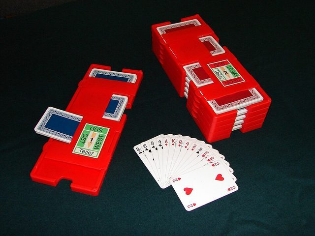

Home / Age of Contact and Craft / Mesopotamia, Levant and Arabia
Encyclopedia ID 816
Tarneeb
Also known as Tarnib

Four players in two teams bid for the right to name trumps, then must take at least their bid in tricks.
Heritage note
Part of the living heritage of Iraq, Syria, Lebanon.
Origins
Usually placed in the era of Age of Contact and Craft (about 1500 to 1800), although its exact origins are uncertain, within the cultural world of Mesopotamia, Levant and Arabia.
Play it
Sources
Related entries


More from Iraq

Al-Jazari water-clock contraptions
Iraq · Puzzles and mind games
Cuneiform Clay Tablet Scribe
Iraq · Crafts and making
Mudhif reed-arch house
Iraq · Crafts and making

Santur Hammer Strings
Iran +3 · Musical instruments